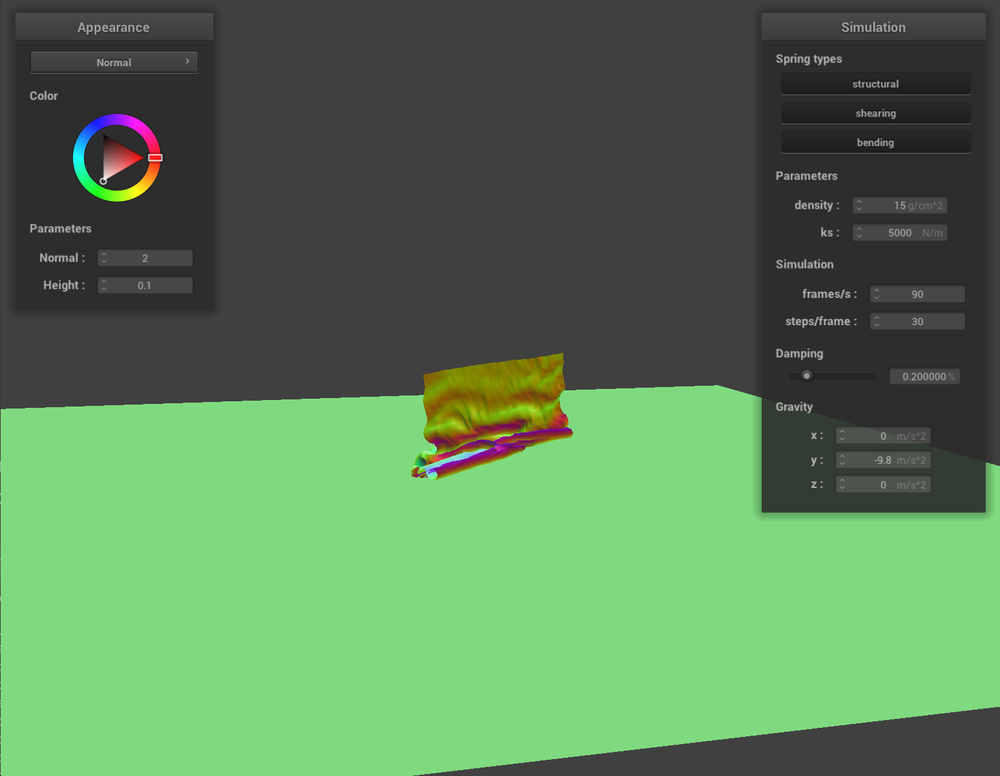
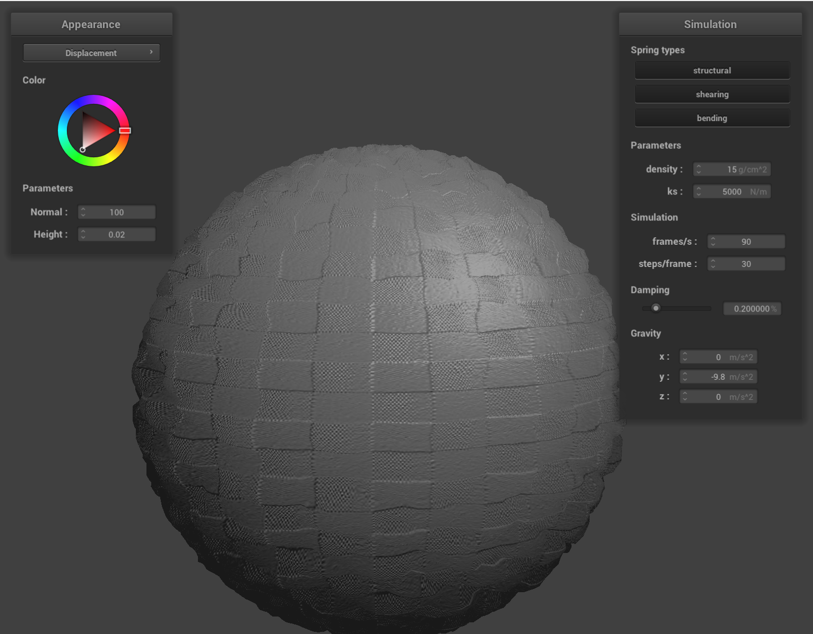

CS 184: Computer Graphics and Imaging, Spring 2024
Project 4: Cloth Simulator
Harkeerat Singh
Overview
Throughout this project, I delved into the intricacies of shader programming, creating lifelike textures and lighting effects on 3D objects. I learned to utilize vertex and fragment shaders to simulate complex surface details, such as bumps and displacements, which significantly enhanced visual output without burdening the model with extra polygons. The fine-tuning of light interaction with materials using techniques like Blinn-Phong shading was particularly illuminating. The project highlighted the power of shaders in rendering realistic scenes and underscored their importance in graphics programming. Throughout the process, I was fascinated to learn how shaders can efficiently simulate intricate details and how different mappings can impact performance and visual outcomes. This exploration provided me with a deeper understanding of the graphics pipeline and the powerful role shaders play in real-time rendering.
Part 1: Masses and springs
 No shearing constraints
No shearing constraints
|
|
Only shearing constraints
|
|
All constraints
|
Part 2: Simulation via numerical integration
Adjusting the spring constant ks significantly influences the cloth's behavior in the simulation,
reflecting changes in how stiff or flexible the cloth appears from start to rest.
With a Very Low ks:
A low spring constant means the springs connecting the point masses are less stiff.
This lower stiffness allows the cloth to stretch and deform more easily under the influence of external forces such as gravity.
From the start of the simulation, a cloth with a very low ks droops significantly, exhibiting pronounced stretching and bending.
As the simulation progresses towards rest, the cloth settles into a position where it appears more stretched out and less capable of
retaining its original shape, compared to a cloth with a higher ks. The overall effect is a much more malleable and flexible cloth that responds more dramatically to forces and might take longer to reach a stable rest position due to the increased movement.
With a High ks:
Conversely, a high spring constant increases the springs' stiffness.
This increase means the cloth resists deformation, maintaining its shape more effectively against external forces.
From the simulation's start, a cloth with a high ks exhibits minimal sagging or stretching,
maintaining a shape closer to its initial configuration. As the simulation moves towards rest,
the cloth with a high ks settles quickly, displaying minimal deformation from its original state.
The cloth appears more rigid and less susceptible to stretching or bending,
reaching a stable rest position more swiftly and with less overall movement.
|
KS = 5000
|
KS = 50000
|
KS = 50
|
|
Adjusting the cloth's density in a simulation changes its response to forces, akin to comparing lightweight versus heavyweight fabrics.
With a Low Density:
Behavior at Start: A low-density cloth, having less mass, reacts more to external forces right from the start. It moves freely and shows significant responses to gravity and any applied forces.
Behavior at Rest: Due to its lower mass, it exhibits more fluttering and takes a longer time to settle into a stable position. The cloth's movements are more pronounced and prolonged, resembling the behavior of lightweight fabrics like a thin curtain in a breeze.
With a High Density:
Behavior at Start: A high-density cloth, being heavier, shows less reaction to the same forces. Its movements are subdued, and it tends to maintain its initial shape more than a lighter cloth would.
Behavior at Rest: It reaches a rest position more quickly, with minimal fluttering and movement. This is similar to how a heavy drape falls straight down without much disturbance.
Adjusting the damping factor in a cloth simulation influences how quickly the cloth's movements settle down.
With Low Damping:
Behavior at Start: The cloth starts with more energetic movements. Low damping means the cloth's motion is less restricted, allowing it to oscillate or wave freely in response to forces.
Behavior at Rest: It takes longer for the cloth to come to rest. With less resistance to motion, the cloth continues to move and settle down slowly over time, showing prolonged oscillations and fluttering before it finally stabilizes.
With High Damping:
Behavior at Start: Movements of the cloth are more muted from the beginning. High damping restricts the cloth’s motion more, making it react in a subdued manner to any initial forces.
Behavior at Rest: The cloth settles into a rest position more quickly. The higher resistance to motion dampens oscillations and reduces fluttering, leading to a faster stabilization of the cloth after being disturbed.
Part 3: Handling collisions with other objects
|
$\text{ks} = 500$
|
Initial configuration ($\text{ks} = 5,000$)
|
$\text{ks} = 50,000$
|
|
With ks = 500 (Image 1)
The cloth with a lower ks value appears significantly more pliable and conformal to the sphere underneath. It sags and stretches considerably, almost hugging the sphere's surface closely, with deep folds and pronounced drooping between points of support. This is indicative of a softer, more elastic material that is less resistant to forces such as gravity.
With ks = 5000 (Image 2)
At the default spring constant, the cloth still shows a degree of flexibility and conforms to the shape of the sphere, but with less sagging and stretching compared to the lower ks value. The folds are less deep, and the cloth maintains a more defined shape, suggesting a firmer material that balances flexibility with structural integrity.
With ks = 50000 (Image 3)
With a much higher ks, the cloth exhibits very little sagging or stretching. It retains much of its shape, draping over the sphere with minimal deformation. The cloth appears stiffer and holds its form, resembling a denser or more rigid material that resists deformation from gravity, characterized by shallower folds and a smoother appearance over the sphere.
Part 4: Handling self-collisions
|
Self collision 1
|

Self collision 2
|
Self collision 3
|
|
|
$\text{density} = 1$
|
$\text{density} = 50$
|
|
$\text{ks} = 1,000$
|
$\text{ks} = 7,500$
|
Case 1: Density = 1 (Low Density)
Behavior: With low density, the cloth falls more slowly and is greatly affected by air resistance and its own inertia.
As it falls onto itself, it billows and creates a larger, softer folds.
Case 2: Density = 50 (High Density)
Behavior: A high-density cloth falls more quickly due to its weight.
It results in a less apparent billowing and tighter form, smaller folds as it collapses onto itself, looking more compact and heavy.
Case 3: Spring Constant (ks) = 1000 (Lower Stiffness)
Behavior: A lower spring constant means the cloth appears to be more elastic and stretchy.
It forms deeper, more pronounced folds as it falls onto itself due to the springs allow for greater extension.
Case 4: Spring Constant (ks) = 7500 (Higher Stiffness)
Behavior: With a higher ks, the cloth is resisting stretching and deformation.
It should appear stiffer and maintain more of its initial volume as it falls onto itself, resulting in less pronounced folding.
Part 5: Cloth Sim
The shader program is used to control the rendering of shapes and colors on the screen. The vertex shader manipulates the shape by adjusting the position and properties of each vertex, transforming 3D models into a 2D projection, while the fragment shader adds color and texture to the shapes, creating detailed visual effects like lighting and shadow. Together, they process the 3D data and determine how it appears in the final image, allowing for the creation of complex and realistic scenes in real-time graphics.
The Blinn-Phong model adds a specular highlight to the object,
which is the bright spot of light that appears where the viewer can see the reflection of the light source.
This specular component is calculated based on the angle between the viewer's line of sight and the reflection
direction of the light off the surface. The model uses an exponent called the shininess coefficient to control the size
and intensity of the specular highlight—the higher the coefficient, the smaller and sharper the highlight. This makes the
Blinn-Phong model particularly good at representing materials like plastic or metal which have distinct specular reflections.
|
Ambient component only
|
Diffuse component only
|
|
Specular component only
|
Complete Blinn-Phong model
|
|
Bump Mapping on the Cloth
|
Bump Mapping on the Sphere
|
|
|
Displacement Mapping on the Sphere
|

Displacement Mapping on the Sphere (coarser mesh)
|
|
In the screenshots showcasing bump and displacement mapping on both cloth and sphere surfaces, we can observe the contrasting effects each technique has on the texture details. Bump mapping gives the illusion of depth and complexity without altering the geometry of the surface, hence why the cloth and sphere retain their original shape while exhibiting textured shadows and highlights.
Displacement mapping, conversely, actually modifies the mesh geometry, creating tangible relief with the texture details. This results in a more realistic representation, as seen on the sphere where the texture is not just a visual effect but has become part of the sphere's structure. This can lead to a more convincing representation of complex surfaces, especially when the light interacts with the altered shapes, casting shadows and creating highlights that correspond to the true physical form.
Adjusting the sphere's mesh coarseness significantly affects the displacement mapping results. With a finer mesh (e.g., using -16 or -128), the details are more pronounced and smoother, while a coarser mesh (e.g., using -0 or -16) might not capture all the nuances of the texture, leading to a rougher and less detailed appearance. The bump mapping remains unaffected by mesh coarseness since it doesn't alter the mesh but only simulates the lighting effects on a surface texture.
|
Mirror Shader on the Cloth
|
Mirror Shader on the Sphere
|
|